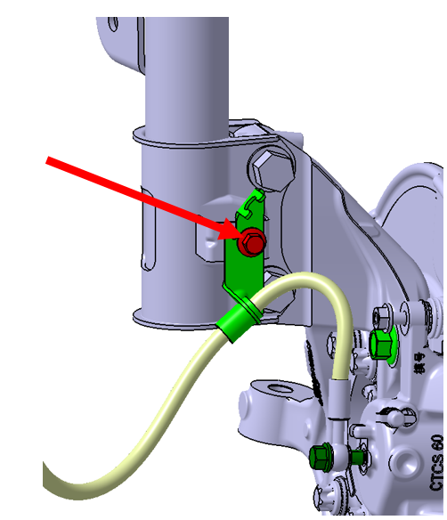
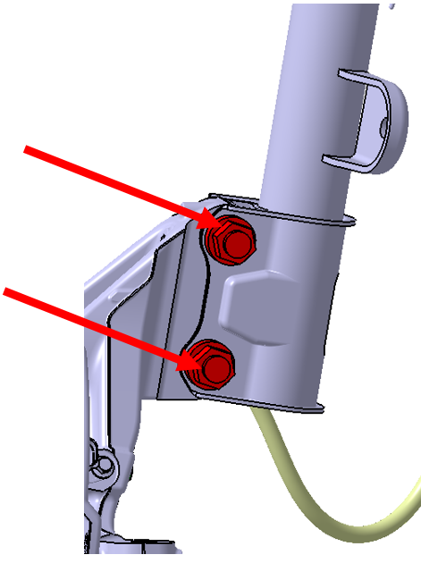

前支柱总成
-
拆卸
-
举升车辆，拆卸车轮。参考： 车轮和轮胎
-
拆卸前支柱上制动油管支架固定螺栓。扭矩： 22±2N.m。

-
拆卸前支柱与前连接杆总成连接螺母。 扭矩：120±12N.m。

-
拆卸前支柱与转向节连接螺栓和螺母。扭矩：（250±20）N.m。

-
拆卸机舱饰件。参考： 拆卸和安装机舱饰件
-
松开前支柱总成上端与车身连接的3处固定螺母，取出前支柱总成，扭矩：85±5 N.m。

-
-
安装
安装顺序与拆卸顺序相反，更换新前支柱总成时，确保左、右前支柱总成螺旋弹簧色标（色标位于弹簧下端第2.25圈附近位置，分为红色和白色两种颜色）相同。